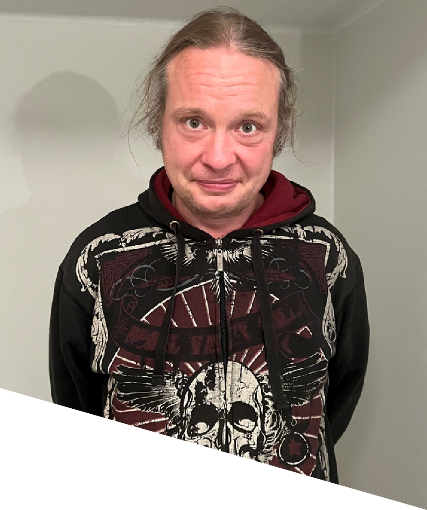

Hei, olen
Ohjelmistokehittäjä (opiskelija)
Opiskelen ohjelmistokehittäjäksi Taitotalossa ja suuntaudun web-kehitykseen. Tavoitteenani on IT-insinöörin tutkinto Metropolia AMK:ssa.

Olen helsinkiläinen ohjelmistokehittäjäopiskelija Taitotalossa. Hoitoalalta IT-alalle siirtyminen on ollut luonteva askel — molemmissa aloissa korostuu kyky asettua toisen asemaan ja ratkaista ongelmia käytännönläheisesti. Minulla on vahva kokemus vaativissa ympäristöissä työskentelystä ja olen tottunut toimimaan sekä itsenäisesti että tiimissä. Web-kehitys kiinnostaa minua erityisesti, mutta olen avoin myös muille IT-alan mahdollisuuksille. Valmistun ohjelmistokehittäjäksi maaliskuussa 2028 ja tavoitteenani on jatkaa IT-insinööriopintoihin Metropolia AMK:ssa.
Avaruusteemainen henkilökohtainen verkkosivusto. Video-tausta, animoitu navigointi ja responsiivinen rakenne.
JavaScript, React, SQL ja paljon muuta — 2026-2027
Työskentely useissa kaupungin ryhmäkodeissa. Lääkintävastaavan tehtävät, vuorotyö, vaativien asiakkaiden kanssa toimiminen.
Tuntityöntekijänä aloittaminen, lähihoitajaopinnot työn ohessa oppisopimuksella.
Omaishoitajana toiminen työn ohessa veljelle, jolla on kehitysvamma ja autistiset piirteet.